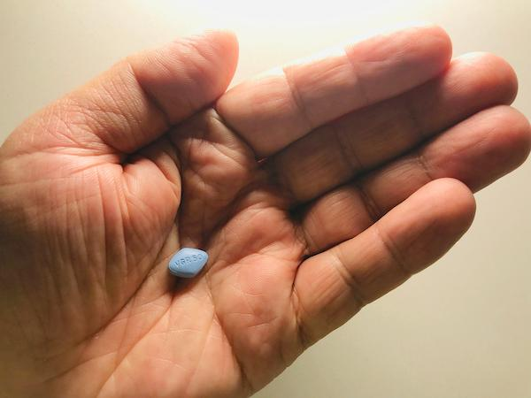

Erectile dysfunction, or ED, means having trouble getting or keeping an erection firm enough for sex. It can be caused by problems with blood flow, nerves, stress, or other health issues. ED is common, especially as people age, and it can affect how a person feels about themselves or their relationships.
Oral medicines for ED can help improve blood flow to the penis, making it easier to have and keep an erection.

There are a few types of oral medicines used to treat ED. All are taken by mouth and work in a similar way.
Common types include:
Sildenafil, such as Viagra®
Tadalafil, such as Cialis®
Vardenafil
Avanafil, brand name Stendra®
Each medicine starts working at a different time and may last for a few hours or longer. Your care team will help pick the one that fits your needs.
These medicines help relax the blood vessels in the penis. This lets more blood flow in when you are sexually excited, which helps you get and keep an erection.
You still need to be sexually aroused for the medicine to work. The medicine does not cause an erection by itself.
These medicines do not increase sexual desire or cure ED. They help you have an erection when you want to have sex.
Talk with your care team before starting any ED medicine. Tell them about all your health problems and medicines. These drugs are not safe for everyone.
Be careful if you:
Take nitrate medicines for chest pain
Have heart disease, low blood pressure, or have had a stroke
Have liver or kidney disease
Use certain blood pressure or prostate medicines
Have vision problems or retinitis pigmentosa
Most side effects are mild and go away in a few hours.
Common side effects include:
Headache
Flushing or redness in the face
Nasal congestion
Upset stomach
Back or muscle pain
Vision changes, such as a blue tint or blurry sight
These medicines are safe for many people but can be dangerous if misused.
Rare but serious risks include:
An erection that lasts more than 4 hours: This is called priapism. It can harm your penis. Go to the Emergency Room if this happens.
Sudden loss of vision or hearing: Get medical help right away if you notice these.
Dangerous drop in blood pressure: This can happen if oral ED medicines are taken with certain heart or prostate medicines.
What is the best ED medicine for me?
How long should I wait after taking the pill?
Can I take this medicine with my other pills?
What side effects should I watch for?
What else can I do to improve my sexual health?
Your care team is here to help. Ask questions at any time.
Thank you for trusting us with your care. We are here to support you and want you to feel your best. Contact us with any questions.
IF YOU HAVE A MEDICAL EMERGENCY, CALL 911 OR GO TO THE EMERGENCY ROOM.
The information presented is intended for general information and educational purposes. It is not intended to replace the advice of your health care provider. Contact your health care provider if you believe you have a health problem.
Last updated May 2025
© 2025 Mytonomy, Inc. All rights reserved.